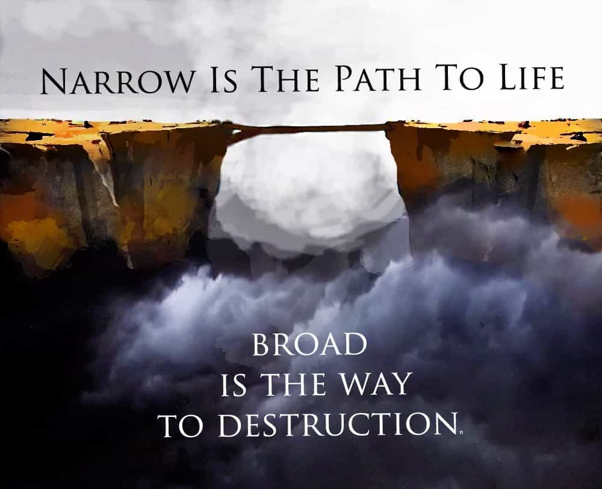

< < < Back
Bad Things Happen When Women Lead And Men Follow – Return Of Kings
For the largest part of known human history, it has been men who have been the riders of civilization. The luminaries of the torch, the undying flame of kin, brotherhood, leadership, and order. It has been because of their innumerable sacrifice as men; men of their family, men of their country, and men of their culture, that we can now enjoy and afford the luxuries of what modest living affords us.
But as I’ve written before, something seems amiss in our modern world.
The blame rests on men
Men are responsible for this. It is not women. Men are responsible for their household, responsible for their affairs, and responsible for the state of their nation. And they are responsible for the absolutely unacceptable state of their women. In the haunting words of sermonist R.G. Lee,
Search the pages of the Bible all you will; study history all you please. And you will find one truth that stands out above some other truths. What is that truth? The truth that the spiritual life of a nation, city, town, school, church, or home never rises any higher than the spiritual life of women. When women sag morally and spiritually, men sag morally and spiritually. When women take the downward road, men travel with them. When women are lame morally and spiritually, men limp morally and spiritually. The degeneracy of womanhood helps the decay of manhood.
How thus, did we allow this to come to be?

She hears whispers
Walk with me to the Garden. The Garden of the East. About six thousand years ago. One fine noon, under the auspices of cold river air and soft patches of brightly-colored leaves, there lie two: one man and one woman. We are covered in leaves and balk, we soon discover, and cannot move, nor talk, nor divert our eyes to what is about to happen.
A serpent creases by, sneering and seductive, making jests toward the woman, or so we are led to believe. The woman seems frightened at first glance, but slowly eases into the serpent, laughing at what the serpent whispers into her ear and paying amusement to its performance.
Some time passes by. We see the woman fade into the thick forest trees. A while later, we observe, the woman walks along the man, both with a strange fruit in hand, the serpent now seen nowhere, and the skies clouded with darkness and thunder. In a fit of lunacy, the man and the woman both shower themselves in leaves and balk, and take to rummaging across the Garden like utter mad fools.
Man takes to her call
What we have witnessed is the timeless, bleeding edge of human naïveté. It is a fact of nature that man is at odds not only with himself, but with others: both those above him and those below him, for there are in truth no equals. And for order to triumph, not only must man triumph over himself, but everyone must also triumph for the good of something beyond themselves.
This arrangement can only be sufficiently well-maintained if we obey the wishes of our zealous god: tradition.

It is no accident that the institutions most central to Western tradition have been found in virtually all civilizations worth writing a tome about. They have been dictated to us by the lips of our most highest himself: whether that be evolution or a single, conscious power in charge of designing the universe. It is an optimal ideology that accounts for the nature and sexual strategies of both men and women, and incentivizes them to care after a garden of their own.
Men hold a very special place as protectors and enforcers of this tradition. So that folly may not rule in those who dare not triumph. But, we see, that the serpent so loves to play with our wit, and to that end he knows women are the most apt at play, and the easiest to lead far from the narrow gate. And when man trusts more in the warmth of hand of her woman than the path she leads him to, that is when thunder falls from the heavens and the paleness of sky becomes overturned.
Walking on arid soil
And after a long walk through history, it is clear that we have been lulled by the serpent’s song. Spoke once the woman, and the man bent over his knees in order to please. We failed to be discriminating in the company of poor ideals, and gave the woman her promiscuous zest with which she later robbed us (and in a fit of divine irony, herself) of our dignity, hoping we would gain power, acceptance, and a serviced libido in return.
We gave them a voice in the state, a voice in our churches, a voice in our halls of learning, and what has really been heard? We’ve heard cries of foolishness, of bad apples and false burglars in the night, but the matter is that men have compromised everything they knew to be certain in order to gain nothing of lasting import.

The path that leads to brighter fields is thinning by the age.
Certainly, we have known the pleasures of what women have to offer, and perhaps more now so than anytime else, when they fall off by the numbers into our nimble hands, but yet we hesitate to take more than a few, singly bites.
When in times past we would have snatched an agreeable one and faithfully planted the seed of our future castle. Even our own veteran maverick, despite his notable experience with the fairer sex, seems unable to see women as anything else but “a form of entertainment and distraction instead of significantly adding to my life.”
There is not much to be done, once we have sowed the seeds of our garden into the rocks.
But let it serve, as a painful reminder, that women are meant to be enjoyed and to be cherished as any other pleasantry, but be careful of where she might stray you along because in the end you’ll share more than the blame and wish you had not followed her deep into the thicket.
Read More: Sharpen Your Tribal Instincts To Lead In Modern Society


{kind=link}
{kind=link}